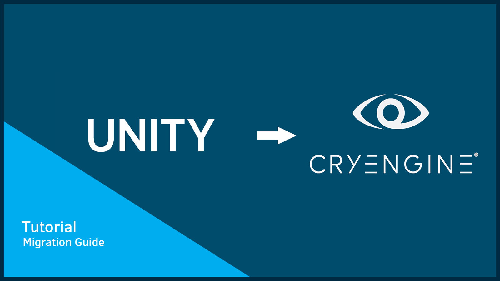
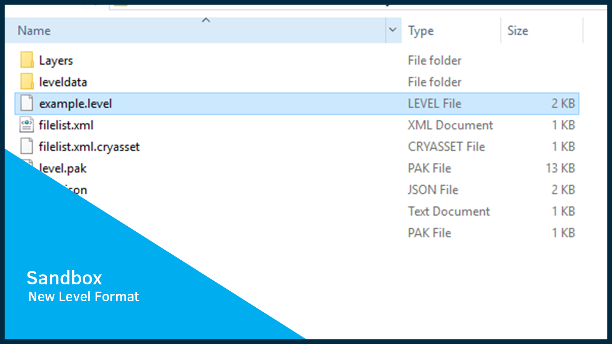
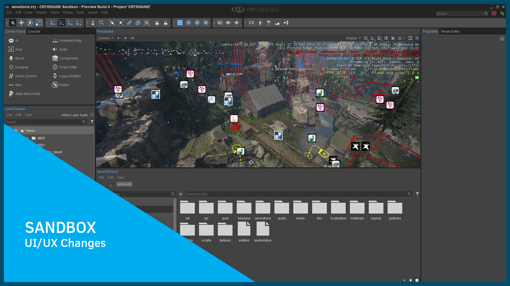
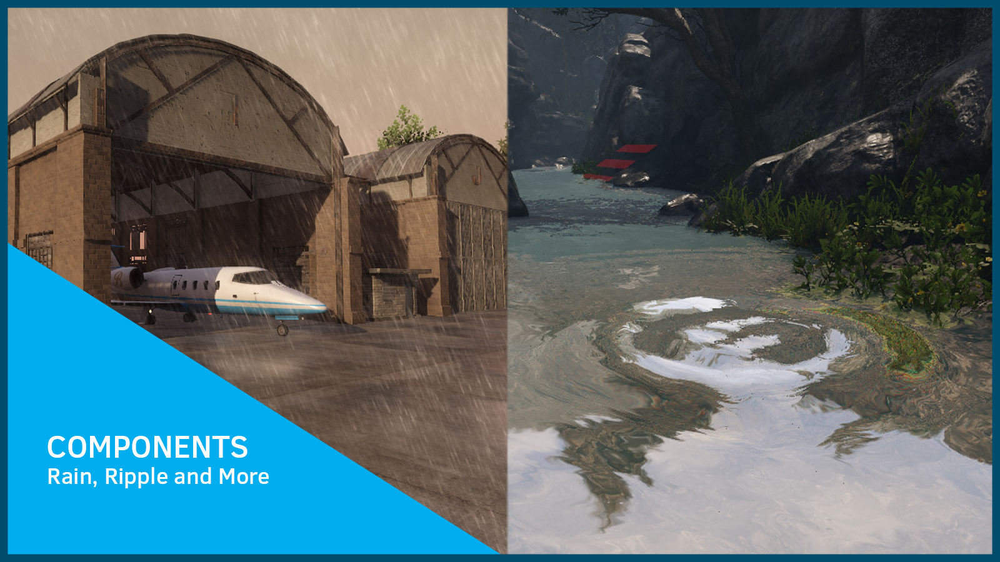
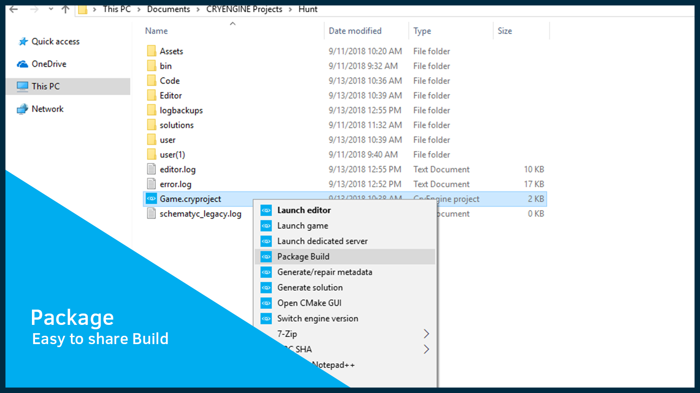
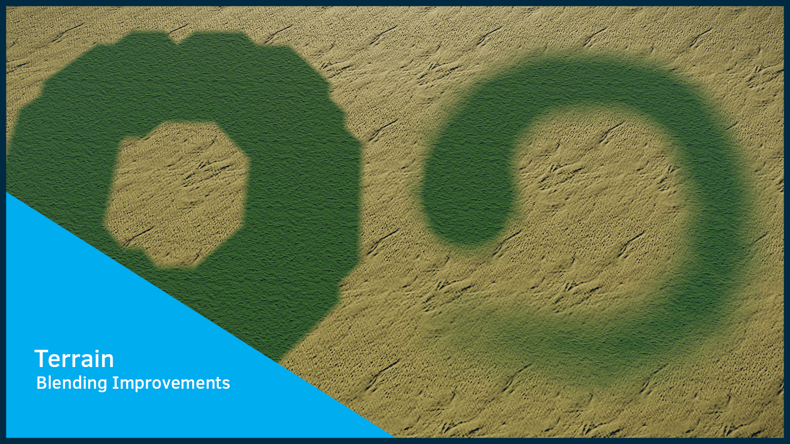
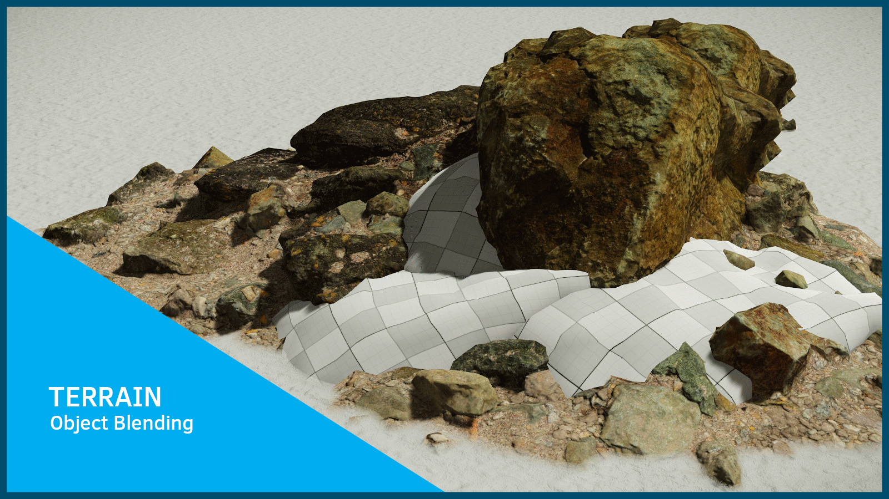
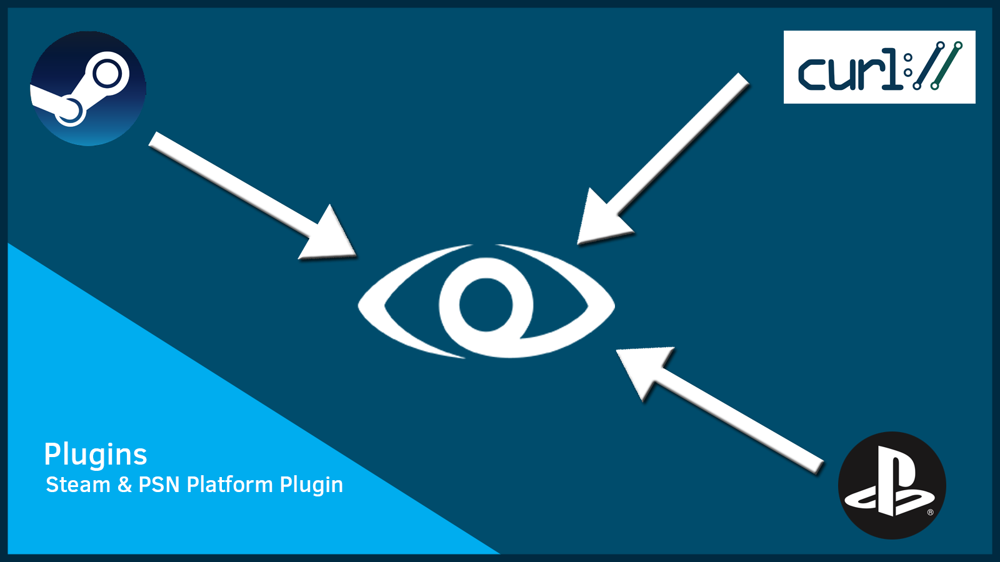

5.5 Overview
Welcome to our latest major update - CRYENGINE 5.5. We have been developing 5.5 in conjunction with the title Hunt:Showdown at our Frankfurt studio and we very much look forward to CRYENGINE users having access to the various fixes and improvements that have trickled down into the main branch from Hunt's development. Along with these improvements we have also migrated various Entities from the legacy GameSDK code to the new Components.
In total we have made over 1000 improvements & fixes and have introduced several new features in CRYENGINE 5.5, these include; the all new .level file format - this allows for much easier team collaboration and permits level files to exist anywhere in your project directory. The Development Team has also updated the Terrain System for all new displacement brushes and better material blending, alongside a new feature that allows for heightmap sizes of less than 1 meter. We have also added deeper C# functionality by exposing it to Schematyc for signals and functions. We have also made the creation of C# scripts easier by allowing users to create and edit C# scripts and have them dynamically update within the browser itself.
For users of Unity we have created a migration guide to help with the transition from Unity (code and assets) to CRYENGINE. Numerous topics on animation and general asset setup are also covered including, detailed breakdowns on code comparisons to help guide users through a familiar workflow. Finally, a simple shooter example is included that will help users with code snippets and get users up and running with CRYENGINE faster than ever.
Another topic that we know will be very welcomed and shows progress on the accessibility front is the all new C++ documentation and with the release of the Sandbox Editor source code the Sandbox programming documentation. Now that CRYENGINE users have access to these portals they will be able to ease their game development through a customized Editor experience and so enrich the quality of their games. This coincides with the overhaul of our User Manual - this is a long term project that will take some time to complete, but we think it's worth showing off now so that we can get the communities opinion on the new structure and the readability of the articles. Our aim is to continue to clean up the docs using the new structure and format, but because things will evolve, then for now it should be taken as "Beta" access as to our future plans on the documentation front.
Finally, and in answer to numerous requests from the CRYENGINE Community for a CRYENGINE on-boarding/beginners course we bring you Flappy Boid. Also in 5.5 is a C# Visual Studio debugger, packaging and building a game through CrySelect, SVOGI Offline Voxelization, a reskinned Material Editor in Qt, and last but not least various Entity Components for Rain, Water Ripples and VR interaction. Given this diverse range of updates and the expansion of platform support then don't wait any longer, go get CRYENGINE 5.5 through the CRYENGINE Launcher NOW!
Contributors
We would like to say a massive thank you to the following for their valuable contribution in the making of this 5.5 release of CRYENGINE.
- ochounous
- 0lento
- ShivamMistry
- Chylix
- uniflare
Sections
Code Interface Changes
For more information, see the Important CRYENGINE 5.5 Data and Code Changes article.
If you are upgrading from CRYENGINE 5.4, please read this topic: Migrating from CRYENGINE 5.4 to CRYENGINE 5.5.
Release Highlights
CRYENGINE Versions and Full Editor Source Code
We really do want to make CRYENGINE users lives much easier - so to that end you can now get Preview Engine versions through the CRYENGINE Launcher. However, for those CRYENGINE users that still want to use Github, then Engine versions are still available from the Crytek/CRYENGINE Github repository including binary releases.
In 5.5 we have also exposed the full Sandbox Editor source code to the Github repository, so users can now clone and begin customizing their own Sandbox Editor experience. Go to the Crytek/CRYENGINE Github repository to begin creating plugins, get Engine versions and to submit pull requests to the CE branch.
We really look forward to seeing other user names appear on the Contributors list above - what better way to showcase your newly developed plugins and products for CRYENGINE.
Flappy Boid
Flappy Boid is our answer to the numerous requests from the CRYENGINE Community for a free of charge CRYENGINE on-boarding/beginners zero to a finished game course. So Flappy Boid has been designed to be a fun way to learn many of the core game development concepts in CRYENGINE V while users make a finished playable game.
Topics covered in the course include; basic animation, physics, lighting, audio, modelling and texturing, scripting game mechanics using Flow Graph, particle effects, using and animating cameras, basic movement and collisions, score-keeping, a basic UI and exporting to a finished stand-alone build.
Everything you need for Flappy Boid can be downloaded completely free of charge from the CRYENGINE Marketplace and whats more the course is available as a series of videos that can be found on Crytek's Youtube and Vimeo channels (see the links on the right).
Everyone at Crytek loves Flappy Boid and we are sure that the CRYENGINE Community will feel the same about it too, so go on and turn Flappy Boid into your own great games!
Unity Migration Guide
For 5.5 we have added a Unity Migration Guide to our CRYENGINE V documentation. This guide is designed to help Unity Engine users transfer their skills and or content over to CRYENGINE faster than ever before.
Within this guide Developers can expect to find detailed information on the basics of files and directory structure, alongside detailed breakdowns of asset conversion and export setups for use in the Sandbox Editor.
Several development disciplines are broken down within the guide that pertain to textures, models, UI and code so as to cover the largest range of topics needed for a functional prototype.
After reading this guide the CRYENGINE team are confident that you will feel really comfortable with the Sandbox Editor interface while developing your next game with CRYENGINE.

New Sandbox Level File Format
A significant change for CRYENGINE 5.5 is the new Level File Format. This feature has been added in order for the Sandbox Editor to future-proof itself inside the concept of collaborative editing and for the usage of version control systems.
Another aspect of this integration is the ability to place level files anywhere within your project directory. Layers have also been upgraded to allow for dynamic population and are no longer hard-coded inside of an archive.
Finally, the Terrain is now visible as an Object inside of the Level Editor on all projects inside of 5.5, furthermore it can be added or removed just like any other item so allowing for more modularity to the workflow.

Documentation Overhaul
CRYENGINE users have long been asking for more documentation and for more up to date documentation. So in 5.5 we have not only focused on the user facing side, but the programming side as well.
We have been hard at work and in 5.5 we expose the progress that has been made on the monumental task of updating the User Manual for Designers, Artists and others who use the Sandbox Editor. This work is far from being complete and will be continued for the rest of 2018 and through 2019.
We have completely overhauled the C++ documentation which now includes numerous code snippets, we have also extended the documentation to include the Sandbox programming portal which coincides with the full release of the Sandbox Editor source code. Another aspect of this overhaul has been properly exposing the API for reference within Confluence and not in a separate portal.
To the right are links to the CRYENGINE V Manual (Beta WIP), Sandbox Programming, the C++ documentation and a link to the API reference within Confluence.
Sandbox UI/UX Changes
New for 5.5 - the Sandbox Editor now provides users with additional upgrades and tweaks to improve workflow.
The Viewport work area has been de-cluttered by creating a drop-down for tabs, this results in users being able to see every open window within a given dock and so allows the nesting of everything inside a side pane.
Additionally, we have now made it possible for you to control the distance of your helpers within the Viewport. This will not only help in the optimization of your development scene (when too many items/icons begin to collect in your level), but will also improve performance by removing unnecessary calls.
Lastly, we have provided the ability to CTRL click the visibility icon to hide all (solo mode). This will help you to get to an item quickly and then jump back into the full scene when there is a complex collection of Entities.
So with these changes we are sure that you will find that the development experience is getting much easier!

Updated Entity Components
In 5.5 we have introduced several new Entity Components whilst also porting over the Rain and Water Ripple Entities from Legacy Entities.
In addition to the above, a new VR Camera and Interaction Component both ship with 5.5 - this will allow you to get up and running with VR even more easily than it was before.
With this new integration, Component Developers will be able to customize the geometry their controller uses, as well as being able to dynamically constrain items to the controller position when a trigger is pressed.
We are sure that users will find these new Components to be a nice addition to the library and we very much look forward to introducing more new Components in future CRYENGINE releases.

Automated Packaging and Backing Up
We know that for non-coders the notion of sharing your CRYENGINE content and packaging it for release has not been easy in the past. So we have addressed this, and with 5.5 we are introducing package build functionality directly within the CrySelect interface. There are options of building out to either profile or release and the location.
The other upgrade to CrySelect is the addition of the new Back-up Tool, so you can now easily create a back-up of your project before switching to another Engine version. Simply put; the new back-up feature takes all plugins shared libraries, assets, code, solutions, cryproject and config files into account.
We are sure that these new additions to CrySelect will really help alleviate some of the previous pain points that Developers have had during migration and delivery of their games.

C# Upgrades
Within the C# implementation we have most noticeably expanded how you create C# assets - this can now be achieved directly inside of the Asset Browser. This luxury allows you to just click the newly created Asset and it will open a Visual Studio instance.
Speaking about Visual Studio, with our new C# extension users can now debug through the IDE. By default our C# implementation has required Mono in order to run, so the extension has been written to expose this in Visual Studio (given its lack of support for the Mono runtime).
Finally, you will notice that inside of the C# implementation you are now able to expose both Signals and Functions to Schematyc for use inside of your Entity Components.
Character Proxy Creation
We recognized that the entire process behind creating a Character was somewhat locked off to specific 3rd party tools and was not flexible enough for most production pipelines. So to address that, we previously introduced to CRYENGINE FBX animation importing and most recently we allowed for the tweaking of ragdolls and their joint limits directly in the Character Tool.
With 5.5 we have further extended this flexibility by allowing for Physics Proxy creation to be undertaken directly in the Character Tool Viewport and to be interchangeable in a production environment. With this integration there are no dependencies placed on the Proxy creation and it simply sits alongside your Character Definition File which allows for seamless editing and versioning.
Terrain System Improvements
The Terrain System just keeps on getting better and better. In 5.5 we bring you the new Weighted Blending of Terrain Materials - this feature will drastically improve the blending of your terrain textures and will provide you with super realistic transitioning.
In the past we have not had the ability to blend multiple materials together, but in 5.5 we have lifted that threshold to support 3 materials.
We have also added support for a smaller unit size of less than 1 meter in the Terrain - users can find this new setting in the Create New Level settings or Resize Terrain menu within the Sandbox Editor.
Last but not least are the improvements in the detailing of your heightmaps. In 5.5 we bring you a new displacement option in the Terrain Sculpting Tools. This can be viewed as a stamp option that allows users to import preset shapes that could have been defined elsewhere or directly through heightmap data that comes from online resources.

Terrain Object Blending
In 5.5 you can now mark Entities with a Mesh Component. This allows the Entity to become part of the terrain mesh and so will be particularly useful when creating environments where materials overhang or materials such as earth, sand or snow build up around the base of an object. This feature dramatically extends the possibilities of the terrain editing tools and allows for an even higher level of realism.

SVOGI Improvements
SVOGI has historically been something that we have promoted in CRYENGINE and a feature that almost all developers now use and adore. Coming with production-proven experience and with the enhanced emphasis on SVOGI being able to run on consoles, we have now enabled Developers with a tool to cache SVOGI on disk and have the GI calculated completely offline - simply go to File -> Export SVOGI Data.
The second feature improvement we have introduced in 5.5 is the advancement in SVO Ray-Traced Shadows, this is a feature that can be considered as an alternative to using cached shadow maps in a scene. These integrations immediately lead to several optimizations and improvements such as;
- No additional CPU side work
- Transparent shadows from transparent objects
- No additional large allocations of shadow maps on the GPU
- Soft penumbra with little performance loss
We are sure that you will find these features really useful in your current development work and that your scenes can now have the proper ambient tonality as seen in real life.
Game Platform Plugins
In 5.5 we have a brand new Game Platform plugin, this allows for easy access to common distribution platforms and data transfer protocols. Our aim is to alleviate and expedite the publishing of CRYENGINE content on multiple platforms along with the additional benefits of promoting material through their features.
Nowadays Steam and PSN are almost essential to the development and deployment of a game to the mass market. So within our new Game Platform plugin we have exposed the ability for you to now access multiple features through Steamworks or PSN API's. Some of the features that most developers will find of use are; matchmaking, leaderboards and achievements that will help users to drive customer retention.
The other integration concerns HTTP and the new libCURL integration that exposes a client-side URL transfer library. For any backend work, then keep this integration in mind as it provides numerous features such as being thread-safe, IPv6 compatible and is extremely fast.

Accessing CRYENGINE 5.5 and Sandbox Editor Source Code
Engine versions are now available through the CRYENGINE Launcher.
- Log into the CRYENGINE Launcher
- Go to LIBRARY -> My Engines where your currently installed and available Engines are listed. From there Engines can be updated (installed).
Sandbox Editor source code is only available via Github: https://github.com/CRYTEK/CRYENGINE
Known Issues
- VS2017 15.8: When upgrading to VS2017 15.8 users may experience issues such as compile errors, if this is the case then try the following;
- When using a templated base class, 'this->' needs to be appended wherever the code refers to a base class member
- When referring to a typedef defined in a template class, the 'typename' keyword needs to be added before the name
- If a symbol cannot be found, even if the header containing the declaration is included, then try using forward declarations and break down headers to avoid cyclic inclusions
- If the compiler complains about finding a member of a template class, try removing the empty class body of the template class base
For more details, see the VS blog post https://blogs.msdn.microsoft.com/visualstudio/2018/08/14/visual-studio-2017-version-15-8/
- Trackview: AnimObject's animation not played (until the window mode is changed). Workaround: Change from fullscreen to window mode. Once done, the animation will start to play.
Animation
Animation General
- Fixed: VCloth bug in CClothPiece::WaitForJob() which referred to incorrect JobManager::SJobState object when attempting to synchronize against software skinning jobs.
- Fixed: Introduced missing assignment of SRendParams::pInstance unique identifier into CCharInstance::RenderCHR().
Audio
Middleware Updates
- Updated to Wwise SDK 2018.1.1 (Note: From CRYENGINE 5.5.0 Preview 6 and for future versions of CRYENGINE, then users MUST update their Wwise version to at least version 2018.1.0 or later. Note: Earlier versions of CRYENGINE i.e. up to and including CRYENGINE 5.5.0 Preview 5 MUST use a Wwise version that is prior to Wwise 2018.1.0.
- Updated to Fmod Studio 1.10.08.
Audio General
- Tweaked: Implement streaming for Fmod Studio.
Core/System
Engine General
- Tweaked: VS2017 15.8 is now supported (see known Issues above). Note: If upgrading to VS2017 15.8, then CRYENGINE projects will require a rebuild.
System
- Fixed: In AI/Physics mode, RenderBegin was called twice, so incrementing FrameId (but only Rendering once). RenderBegin is now only called once.
- Fixed: Missing initialization of CryLock_Mutex::m_LockCount.
- Tweaked: When no project is associated, then do not show initialization failure message box.
Default Entities
- Fixed: Rigidbody component's "Enabled by Default" property cannot be re-enabled.
Graphics and Rendering
Renderer General
- Refactored: Removed SSkinningData::pAsyncDataJobs.
- Refactored: Cleaned-up HDR/LDR/Display-pipeline(s).
- Fixed: Added a missing synchronization step to CMotionBlur::SetupObject() to mitigate data race which caused various visual glitches when software skinning was used.
- Fixed: Crash/freeze for objects with a Dyn2D Texture assigned.
- Fixed: CShaderMan::mfReloadAllShaders now gets passed the correct currentFrameID.
- Fixed: CRenderer::EF_SetShaderQuality call to RT_SetShaderQuality now has FlushAndWait condition
- Fixed: Shader compilation issues on PS4: Glass@GlassPS(%DEPTH_FOG)(%_RT_FOG|%_RT_QUALITY|%_RT_TILED_SHADING). Watervolume@WaterReflPS(%SSREFL|%FLOW|%SPECULAR_MAP)(%_RT_COMPUTE_SKINNING|%_RT_SAMPLE4). Watervolume@WaterReflPS(%SSREFL|%SUN_SPECULAR)(%_RT_COMPUTE_SKINNING|%_RT_SAMPLE4).
- Fixed: Incorrect handling of clear-flag with progressive rendering-passes.
- Fixed: Incorrect detection of PostPresent().
- Fixed: (Particles) Use 32-bit IB for consoles as well.
- Fixed: Create temporary depth and color RTs for Xbox (temporary solution).
- Fixed: Race-condition on pRenderObject->m_pCompiledObject.
- Fixed: Edge case where the deletion of Pipeline State Objects (PSO's) was not deferred (if they were allocated and released in the same frame).
- Fixed: Projector lights (integration issue).
- Fixed: Drawing of subranges in multithreaded drawing.
- Fixed: Pipeline State Object (PSO) deferred release logic.
- Fixed: Add compile time configurable delay before releasing unused Pipeline State Objects (PSO's).
- Fixed: Explicitly disable D24S8 support on Durango.
Vulkan
- Fixed: Deferring pipeline destruction - fixes the crash on startup.
3D Engine
- Fixed: Remove faulty check for duplicates - it was causing false positives due to a race condition.
Particles
- New: SecondGenOnCollision can now restrict which surface types spawn child particles.
- Refactored: Partially merged pfx1 and pfx2 particle managers - simplifying usage in 3DEngine; IParticleManager forward calls to IParticleSystem. Removed unused IParticleEffectIterator.
- Optimized: Emitters now react properly to phys area updates. Moved phys area update management from ParticleManager to PhysEnviron, now shared by pfx1 and pfx2. Removed obsolete PhysAreaChangeProxy code. Removed obsolete EffectIterator.
- Optimized: Improved Feature Collision accuracy and fixed many bugs. Reduced Rendering When Idle (RWI) calls by undertaking multi-frame look-ahead RWI's and detecting particle stops. Replaced e_ParticlesObjectCollisions with e_ParticlesCollisions, controlling all collision options.
- Fixed: More accurate water volume intersection tests, preventing unnecessary rendering of BeforeWater passes. Use emitter underwater status to determine render passes. Fixed fade function for particles near water surface and ensure alpha goes to 0 (rcp_fast).
- Fixed: Improper definition of TParticleCounts which prevented some stats from displaying.
- Fixed: Added additional asserts and checks to ensure correct video memory access.
- Fixed: Don't call pPhysicalWorld->RayWorldIntersection when only testing terrain.
- Fixed: Missed collisions caused by invalid backface hit detection.
- Fixed: FeatureSpawn version incompatibility bug.
- Fixed: Invisible oil pools (prematurely "stable").
- Fixed: Invalid (zero) bounding box warnings. Removed unrequired maxBounds.
- Fixed: Don't mark emitters dead while still updating.
- Fixed: Modifier errors. Streamlined modifier code, removing unrequired base class.
- Fixed: Improper frustum culling and bounds computation of particles with AspectRatio or Stretch settings.
- Fixed: SpawnFraction now correctly changes from 0 to 1.
- Fixed: ActivateIf component now reliably prevents spawning.
- Fixed: LocationCircle/Sphere now uses radius correctly. Spawn-only modifiers are now properly added to init modifier list.
- Fixed: Dangling pointer crash when editing parameters.
- Fixed: Particle templates with invalid SecondGen feature.
PS4 Renderer
- Fixed: GPU crash due to resource being deleted while some resource data was still waiting to be written back from GPU caches.
- Fixed: Video memory counter in r_displayinfo=1.
- Fixed: Faulty preprocessor directives in CDeviceObjectFactory::ExtractBasePointer.
- Fixed: Shader loading of built-in shaders and compute shaders.
Project System
CryVersionSelector
- Fixed: Use UTF-8 encoding when opening .cryproject files.
Sandbox
Editor General
- Fixed: Imported *.fbx file uses ReplaceMe-textures due to missing texture-files in blank-templates.
- Fixed: Issue where the user was unable to open a Material Editor through the Properties Panel edit button.
- Fixed: Issue in property rows where clicking the "edit" button wouldn't actually open the corresponding Editor.
- Fixed: Fixed backing up a level problem.
- Fixed: Crash - when leaving the Database View (DB) open (with no separate windows on the taskbar) and then restarting the Sandbox Editor and attempting to close the DB crashed the Sandbox Editor.
- Fixed: Automatic cryasset generation is disabled for xml, Lua, wav, ogg files and for _autobackup folders.
- Fixed: Level not saving after a backup was successfully created. Also fixed auto-backup timer changes (in Preferences) not immediately taking effect.
- Fixed: Crash when dragging and dropping from Database View (DB) into Viewport.
- Fixed: Dragging *.abc file into Mesh Importer freezes the Sandbox Editor.
- Fixed: Restored CurveEditorContent deletion and signaling logic, after change to delayed initialization.
Additional Fixes
- Fixed: (Renderer, Xbox) Compilation error in RenderDisplayContext on Durango.
- Fixed: (Renderer) DrawToRenderTarget finding no depth-buffer.
- Fixed: (Renderer, win32) Wrong calling convention for function table.
- Fixed: (FBX UI) Properties of imported mesh are not displayed in the Properties-pane.
- Fixed: (FBX Animation) The root of an imported animation sticks to the origin.
CRYENGINE 5.5 Preview Releases
All of the 5.5 preview releases can be accessed from here.